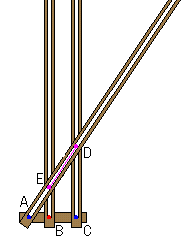

|
In the right,the figure is the apparatus which can draw an exponential curve. When AC moves to right with keeping the length AB and BC, the ratio AB:AC is always BE:CD. The trace of point D becomes the exponential curve by using the property of the ratio of the equality. |
 |